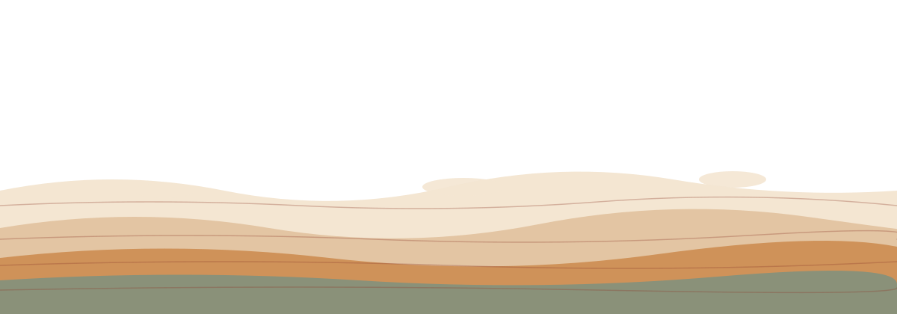
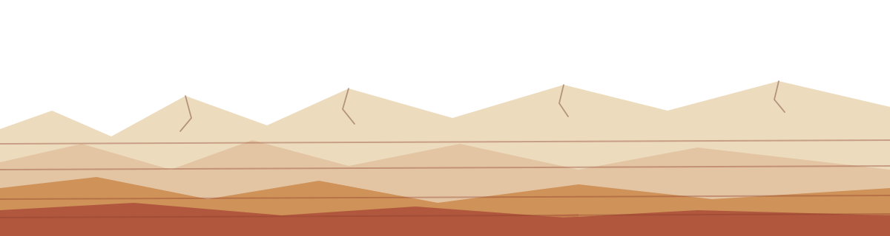
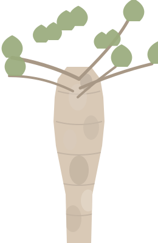
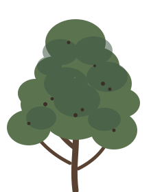
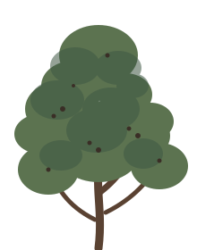

Take stock
An unhurried first session to understand where you actually are — what’s working, what’s worn, what’s calling. No polish required; honest answers serve you best.





Transition & Executive Leadership Coaching
I’m Phil. I coach executives and professionals through career transitions, leadership stretches, and the moments when the familiar route runs out. Warm, candid, practical — a thinking partner for the terrain you’re standing on.
scroll — the river begins below
01
twenty years around change — leading it, studying it, living it
I’ve spent twenty years around change: leading teams through it, studying it, and living through my own — the promotions that outgrew me, the pivots that looked reckless from the outside, the quiet question of whether the current path was still the right one. That’s where I learned that no one navigates a big transition well alone, and that the right partner makes all the difference.
Today I work with leaders and professionals in seasons of change: stepping into larger roles, stepping out of careers that no longer fit, or moving toward something they can’t quite name yet. My approach is warm and candid — part thinking partner, part seasoned guide, always in your corner.
“I don’t hand clients a plan. I help them read the terrain clearly — and then trust their own footing.”
02
how we work together, from first call to landing
An unhurried first session to understand where you actually are — what’s working, what’s worn, what’s calling. No polish required; honest answers serve you best.
Together we define the outcome you’re aiming for and the milestones that will get you there. Real goals, real timelines, real accountability.
Regular sessions as the work unfolds — progress on the plan, honest work on the hard parts, and course corrections whenever conditions change. They will.
You land where you aimed: clearer, steadier, more yourself. And you keep the judgment and habits that got you there, ready for the next journey.
03
engagements shaped around the scale of your transition
One focused session for a specific decision, a stuck place, or the conversation you keep rehearsing — with a written recap and a clear way forward.
Ongoing sessions with messaging in between, for role transitions, leadership stretches, and decisions that deserve steady company.
Advisory-level partnership for executives in full-scale change — new mandates, restructures, reinventions — with team and board support as needed.
Every engagement is shaped around your goals, calendar, and budget. Details and pricing are shared during your discovery call, and booking is handled through my online scheduler.
04
writing on transitions, leadership, and change — latest entries
Oct 2025 · 6 min read
Why getting everything you wanted can feel like falling — and how to turn the free-fall into steady ground.
Read the entry →Sep 2025 · 4 min read
Notes for leaders who confuse holding everything with doing a good job.
Read the entry →Aug 2025 · 8 min read
On recognizing the early signs of career change — before the current decides for you.
Read the entry →05
in their words
“I came to Phil certain I was lost. Six months later I’m in a role I helped design — and I stopped needing anyone’s permission to want it.”
“Phil doesn’t hand you a plan. He asks the question you’ve been avoiding, and then makes it safe enough to answer honestly. That combination is rarer than it should be.”
“The transition nearly broke me. The work didn’t. I know exactly who I have to thank for the difference.”
06
The first step is a free, no-pressure conversation — twenty minutes about where you are and where you’re headed. If we’re a good fit, we’ll both know it. If not, I’ll gladly point you toward a colleague I trust.
Calendly embed will live here · replies within one business day